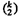

three-factor interactions, and so on. The sign table method of analyzing the results and allocating the variation is also valid. We illustrate this with an example.
three-factor interactions, and so on. The sign table method of analyzing the results and allocating the variation is also valid. We illustrate this with an example.| Previous | Table of Contents | Next |
The results are interpreted as follows:
Thus, we notice that all three metrics are affected more by the address patterns than by the network type This is because the address patterns chosen are very different.
A 2k experimental design is used to determine the effect of k factors, each of which have two alternatives or levels. We have already discussed the special case of two factors (k = 2) in the last two sections. Now we generalize the analysis to more than two factors.
The analysis techniques developed so far for 22 designs can be easily extended to a 2k design. Given k factors at two levels each, a total of 2k experiments are required. The analysis produces 2k effects. These include k main effects,  two-factor interactions, three-factor interactions, and so on. The sign table method of analyzing the results and allocating the variation is also valid. We illustrate this with an example.
Example 17.3 In designing a LISP machine, the three factors that need to be studied are: cache size, memory size, and whether one or two processors will be used. The three factors and their level assignments are shown in Table 17.7.
The 23 design and the measured performance in MIPS is shown in Table 17.8.
To analyze this, we prepare a sign table as shown in Table 17.9. As shown in the last row of this table, the effects of memory, cache, and processors are qA = 10, qB = 5, and qC = 20, respectively. The three two-factor interactions are qAB = 5, qAC = 2, and qBC = 3. The three-factor interaction qABC is 1. The portion of the variation explained by the various factors and interactions are proportional to the square of the effects. The SST can
| TABLE 17.7 Factors and Levels in Example 17.3 | ||
|---|---|---|
| Factor | Level –1 | Level 1 |
| Memory size, A | 4 Mbytes | 16 Mbytes |
| Cache size, B | 1 kbyte | 2 kbytes |
| Number of processors, C | 1 | 2 |
| TABLE 17.8 Results of a 23 Experiment | ||||
|---|---|---|---|---|
| 4 Mbytes | 16 Mbytes | |||
| Cache Size (kbytes) | One Processor | Two Processor | One Processor | Two Processor |
| 1 | 14 | 46 | 22 | 58 |
| 2 | 10 | 50 | 34 | 86 |
| Previous | Table of Contents | Next |